Detassazione al 15% su notturni e festivi: una misura solo per il 2026
La legge di Bilancio 2026 dovrebbe introdurre un'imposta sostitutiva agevolata al 15% sulle indennità per lavoro notturno, festivo e a turni. Il punto critico è la durata: la misur…
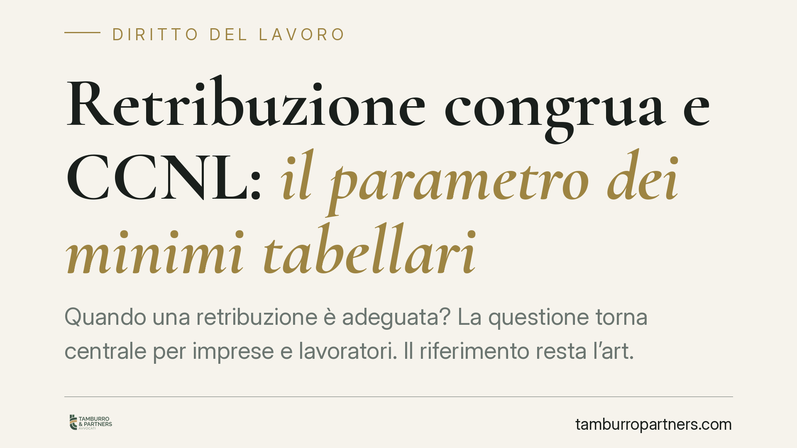
Retribuzione congrua e CCNL: il parametro dei minimi tabellari
Quando una retribuzione è adeguata? La questione torna centrale per imprese e lavoratori. Il riferimento resta l'art. 36 della Costituzione, letto dalla giurisprudenza attraverso i…
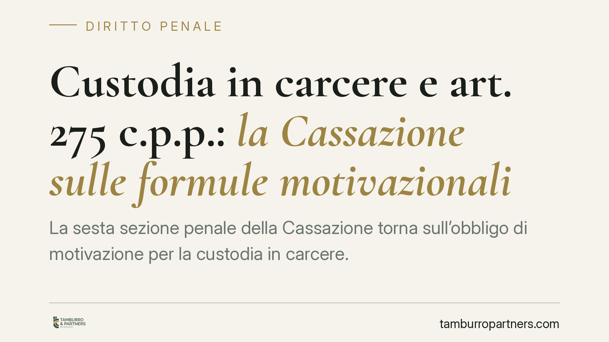
Custodia in carcere e art. 275 c.p.p.: la Cassazione sulle formule motivazionali
La sesta sezione penale della Cassazione torna sull'obbligo di motivazione per la custodia in carcere. Il messaggio è netto: non servono formule sacramentali o espressioni rituali,…
Risoluzione del contratto per inadempimento: come funziona
Quando una parte non adempie agli obblighi assunti, l'altra non è costretta a subire. Il Codice civile prevede la risoluzione del contratto, che libera il creditore dagli impegni e…
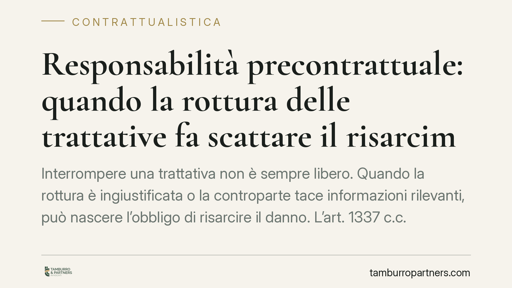
Responsabilità precontrattuale: quando la rottura delle trattative fa scattare il risarcimento
Interrompere una trattativa non è sempre libero. Quando la rottura è ingiustificata o la controparte tace informazioni rilevanti, può nascere l'obbligo di risarcire il danno. L'art…
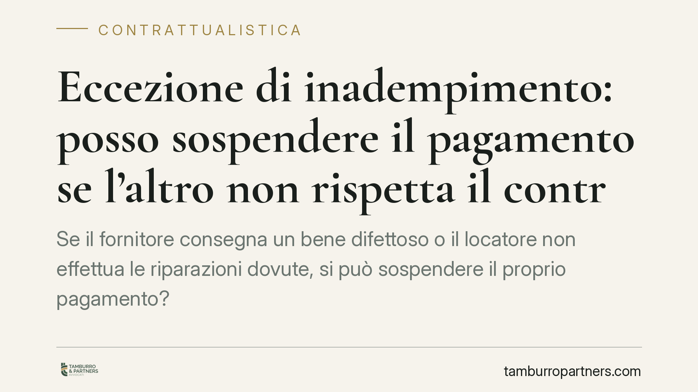
Eccezione di inadempimento: posso sospendere il pagamento se l'altro non rispetta il contratto?
Se il fornitore consegna un bene difettoso o il locatore non effettua le riparazioni dovute, si può sospendere il proprio pagamento? Il Codice Civile lo consente entro precisi limi…
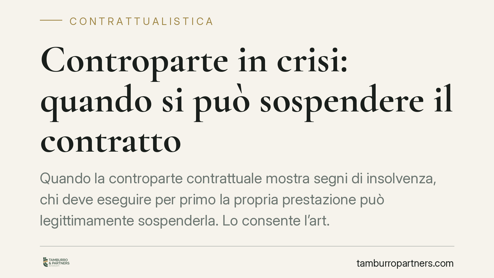
Controparte in crisi: quando si può sospendere il contratto
Quando la controparte contrattuale mostra segni di insolvenza, chi deve eseguire per primo la propria prestazione può legittimamente sospenderla. Lo consente l'art. 1461 del Codice…
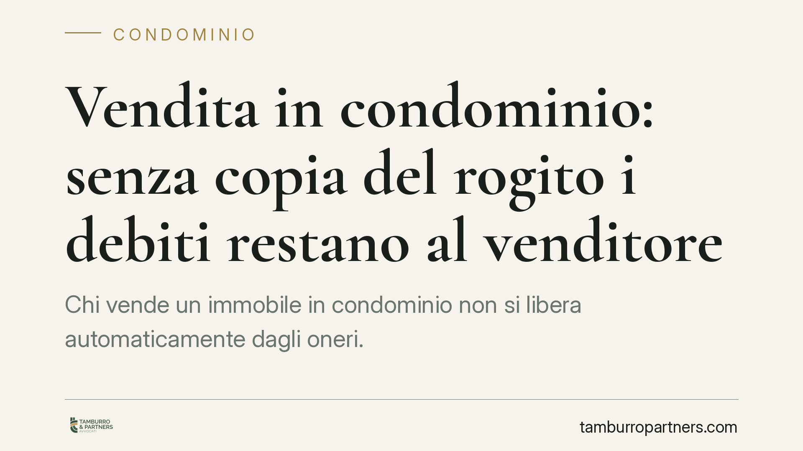
Vendita in condominio: senza copia del rogito i debiti restano al venditore
Chi vende un immobile in condominio non si libera automaticamente dagli oneri. Una recente pronuncia del Tribunale di Treviso ribadisce che, senza la consegna all'amministratore de…
Test del DNA e paternità: il presunto padre può chiederlo?
Un uomo che si ritiene padre di un minore non può pretendere autonomamente un test del DNA. La legge non riconosce un accesso diretto all'accertamento genetico: servono il consenso…
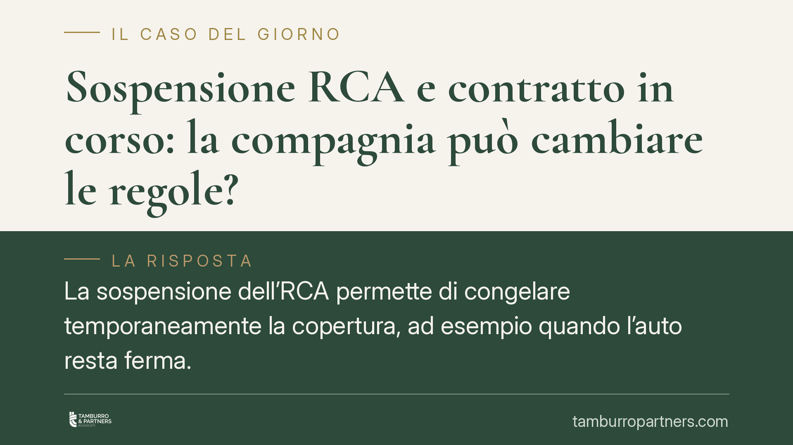
Sospensione RCA e contratto in corso: la compagnia può cambiare le regole?
La sospensione dell'RCA permette di congelare temporaneamente la copertura, ad esempio quando l'auto resta ferma. Molti automobilisti si chiedono se la compagnia possa cambiarne le…
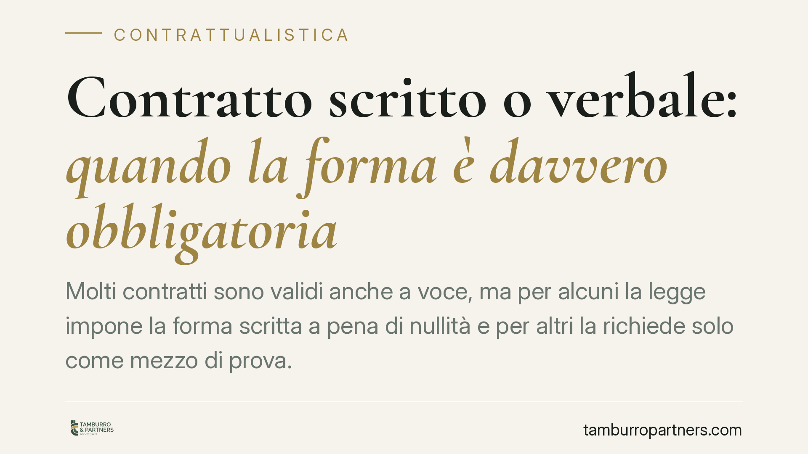
Contratto scritto o verbale: quando la forma è davvero obbligatoria
Molti contratti sono validi anche a voce, ma per alcuni la legge impone la forma scritta a pena di nullità e per altri la richiede solo come mezzo di prova. Confondere i due piani …
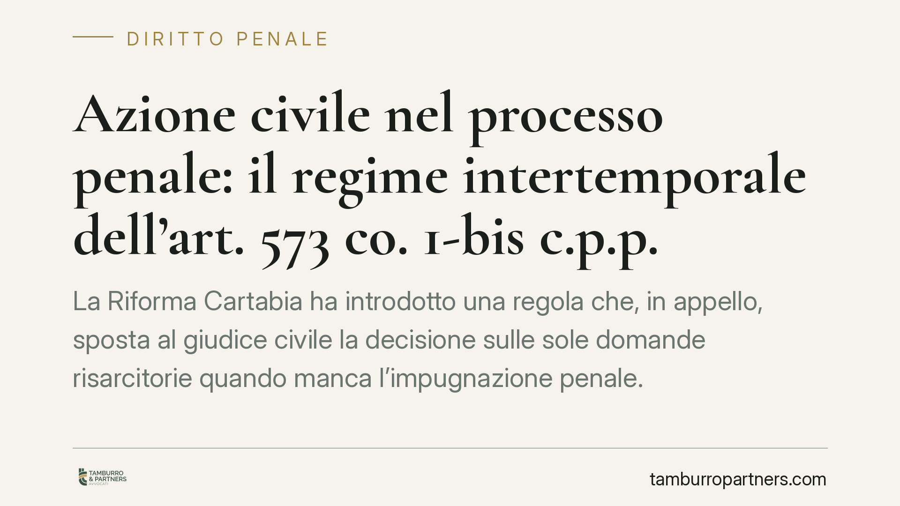
Azione civile nel processo penale: il regime intertemporale dell'art. 573 co. 1-bis c.p.p.
La Riforma Cartabia ha introdotto una regola che, in appello, sposta al giudice civile la decisione sulle sole domande risarcitorie quando manca l'impugnazione penale. Restava aper…
Oggetto del contratto: quando manca o è impossibile
L'oggetto è uno degli elementi essenziali del contratto: se manca, è impossibile, illecito o del tutto indeterminato, l'accordo è nullo. Comprendere i requisiti fissati dal codice …
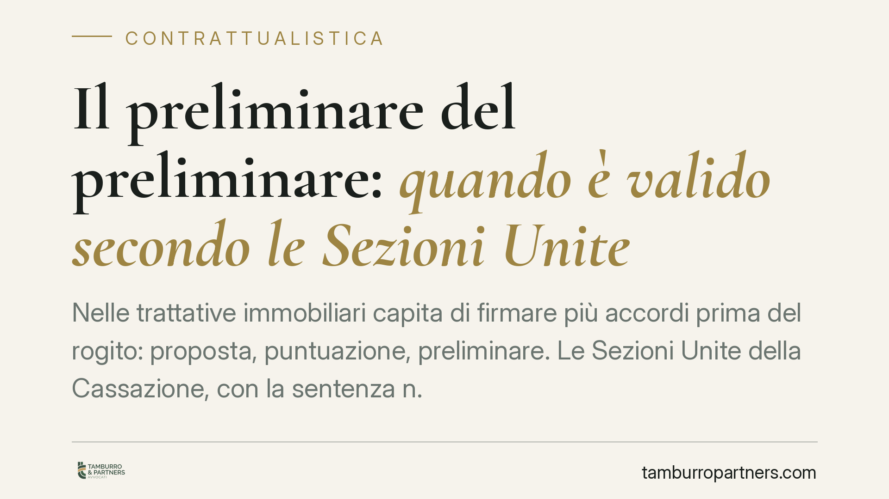
Il preliminare del preliminare: quando è valido secondo le Sezioni Unite
Nelle trattative immobiliari capita di firmare più accordi prima del rogito: proposta, puntuazione, preliminare. Le Sezioni Unite della Cassazione, con la sentenza n. 4628/2015, ha…
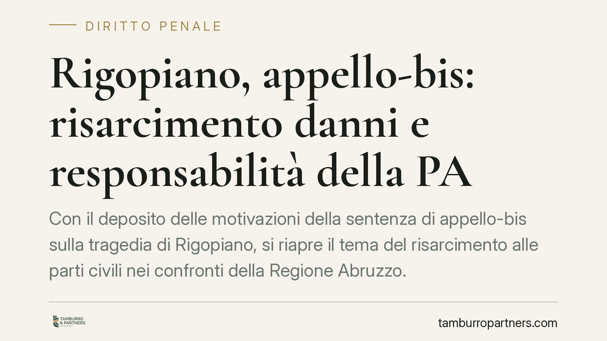
Rigopiano, appello-bis: risarcimento danni e responsabilità della PA
Con il deposito delle motivazioni della sentenza di appello-bis sulla tragedia di Rigopiano, si riapre il tema del risarcimento alle parti civili nei confronti della Regione Abruzz…
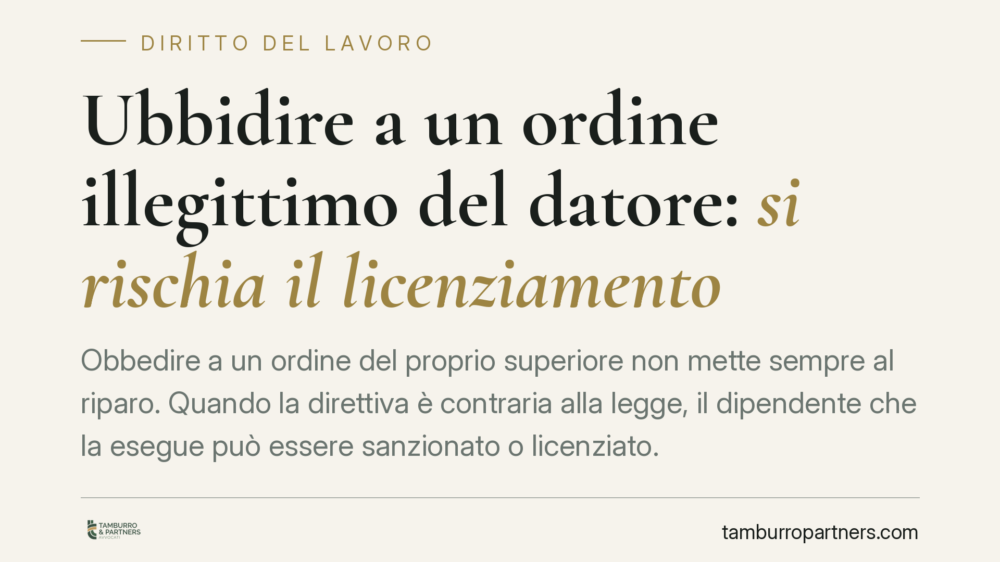
Ubbidire a un ordine illegittimo del datore: si rischia il licenziamento
Obbedire a un ordine del proprio superiore non mette sempre al riparo. Quando la direttiva è contraria alla legge, il dipendente che la esegue può essere sanzionato o licenziato. I…

Prestiti tra coniugi e restituzione in caso di separazione
Chi dà denaro al proprio coniuge durante il matrimonio ha diritto a riaverlo dopo la separazione? Non sempre. Molto dipende dalla natura dell'operazione: un prestito vero e proprio…

Dire «terrone» a qualcuno: ingiuria depenalizzata o diffamazione?
Rivolgere a qualcuno l'epiteto «terrone» non è un gesto neutro sul piano giuridico. A seconda che la vittima sia presente o assente, e del mezzo usato, la condotta ricade nell'ille…

Danni causati dai figli minori: chi paga e quando
Un minore ferisce un compagno durante un gioco, un lancio, una lite. Chi risarcisce la vittima? Il codice civile pone sui genitori una responsabilità che scatta quasi automaticamen…

Il genitore disoccupato deve mantenere il figlio maggiorenne?
La perdita del lavoro non cancella automaticamente l'obbligo di mantenere un figlio maggiorenne. Ciò che rileva è la situazione economica complessiva del genitore, non l'etichetta …

Impianti e verniciatura: chi paga tra locatore e conduttore
Quando un impianto si guasta o le pareti vanno riverniciate, la domanda ricorrente è: la spesa grava sull'inquilino o sul proprietario? La risposta non è mai automatica: dipende da…

Affidamento condiviso: i figli devono stare lo stesso tempo con entrambi i genitori?
Molti genitori separati credono che l'affidamento condiviso significhi dividere il tempo del figlio in parti uguali. Non è così. La giurisprudenza ribadisce che l'obiettivo è la cr…

Spese straordinarie per i figli: come recuperarle se l'ex non paga
Quando un genitore separato non versa la propria quota delle spese straordinarie per i figli, l'altro deve scegliere lo strumento di recupero corretto. La Corte di Cassazione ha ch…

Perdono del tradimento e addebito della separazione: cosa dice la Cassazione
Perdonare un tradimento non significa rinunciare per sempre a far valere l'infedeltà del coniuge. La Cassazione precisa che il perdono di un episodio passato non copre nuove violaz…

Incontri online e addebito della separazione: cosa dice la Cassazione
La ricerca di incontri extraconiugali sul web può pesare in sede di separazione. Secondo la Corte di Cassazione, iscriversi a siti o app per relazioni può integrare la violazione d…

Il risarcimento della casalinga investita: il valore del lavoro domestico
Chi svolge lavoro domestico a titolo gratuito e resta invalido a seguito di un sinistro ha diritto al risarcimento anche della perdita della propria capacità lavorativa. Un'attivit…

Rinuncia all'eredità: cosa succede ai figli minorenni
Rinunciare a un'eredità non chiude la questione. Se il rinunciante ha figli minorenni, questi possono subentrare al suo posto per rappresentazione. Il meccanismo richiede l'autoriz…

Fare pettegolezzi è reato? Quando la voce diventa diffamazione
Il pettegolezzo che circola in ufficio non è sempre innocuo. Quando una voce lede la reputazione di un collega e viene riferita a più persone, può integrare il reato di diffamazion…

TFR ed ex coniuge: come si calcola la quota dopo il divorzio
Dopo il divorzio, una parte del TFR del lavoratore può spettare all'ex coniuge. L'art. 12-bis della legge sul divorzio riconosce una quota pari al 40% dell'indennità riferibile agl…

Fondo patrimoniale e debiti dei figli: quando la casa è protetta
Il fondo patrimoniale dei genitori può essere aggredito dai creditori quando il figlio maggiorenne e autonomo non paga? La distinzione decisiva non riguarda chi ha contratto il deb…